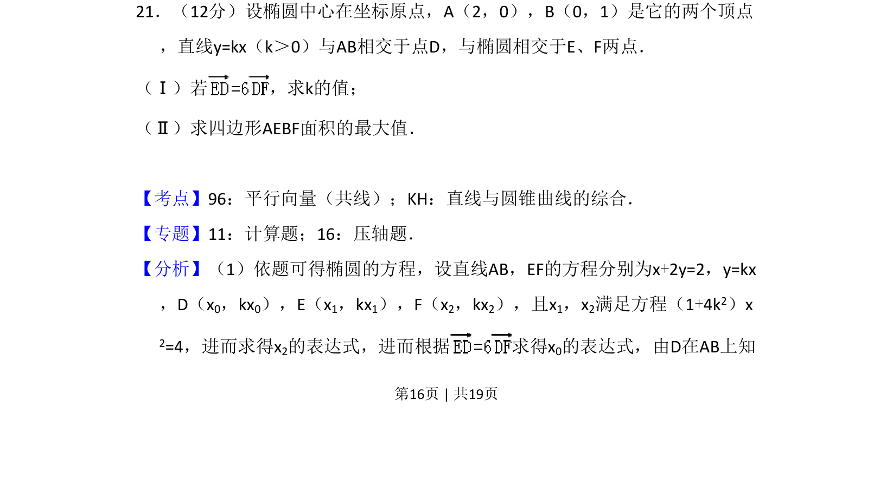
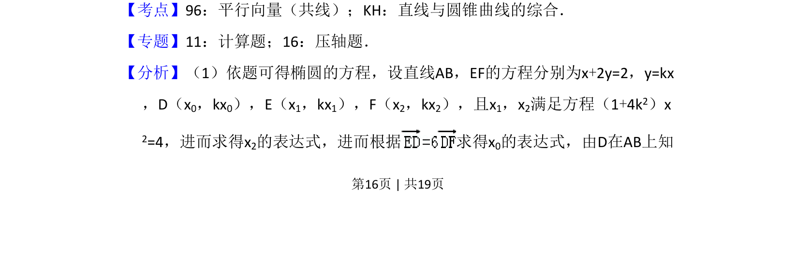
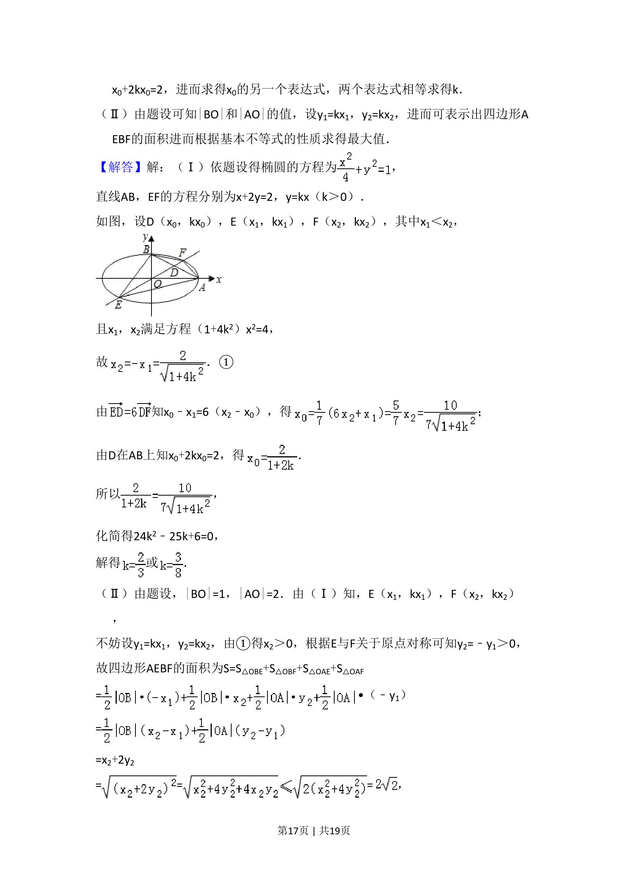
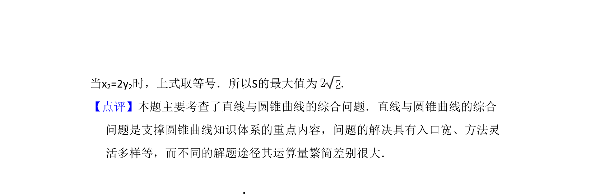

考点：椭圆标准方程 直线与圆锥曲线 向量共线 面积最值

椭圆与直线相交，利用平行向量求参数，计算四边形面积最值。



📄 原 PDF 第 16 页：
素材/真题/吉林/2008-2024·（吉林）数学高考真题/2008年高考数学试卷（理）（全国卷Ⅱ）（解析卷）.pdf
21．（12分）设椭圆中心在坐标原点，A（2，0），B（0，1）是它的两个顶点 ，直线y=kx（k＞0）与AB相交于点D，与椭圆相交于E、F两点． （Ⅰ）若 ，求k的值； （Ⅱ）求四边形AEBF面积的最大值．
【考点】96：平行向量（共线）；KH：直线与圆锥曲线的综合．菁优网版权所有 【专题】11：计算题；16：压轴题． 【分析】（1）依题可得椭圆的方程，设直线AB，EF的方程分别为x+2y=2，y=kx ，D（x0，kx0），E（x1，kx1），F（x2，kx2），且x1，x2满足方程（1+4k2）x 2=4，进而求得x2的表达式，进而根据 求得x 0的表达式，由D在AB上知